長期トレンド
JKMとJEPXシステムプライスの推移グラフ
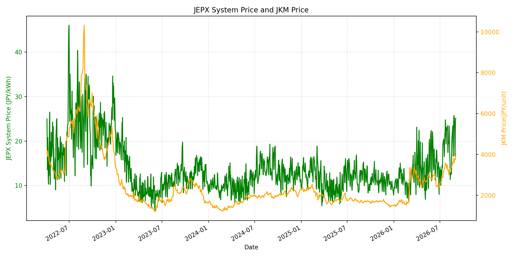
WTIの推移グラフ
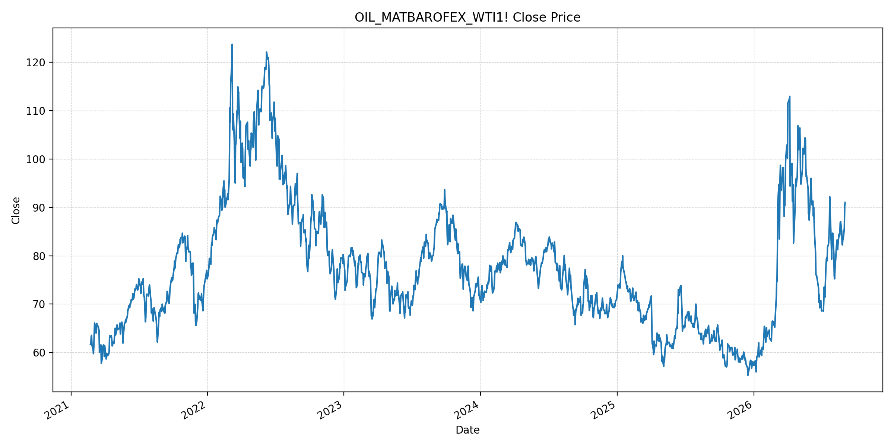
JEPXエリアプライスグラフ（直近一年分）
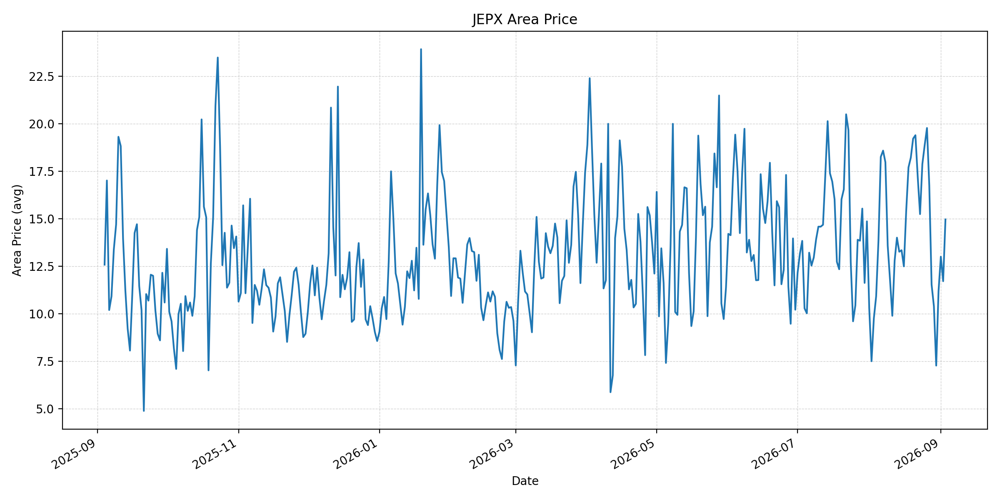
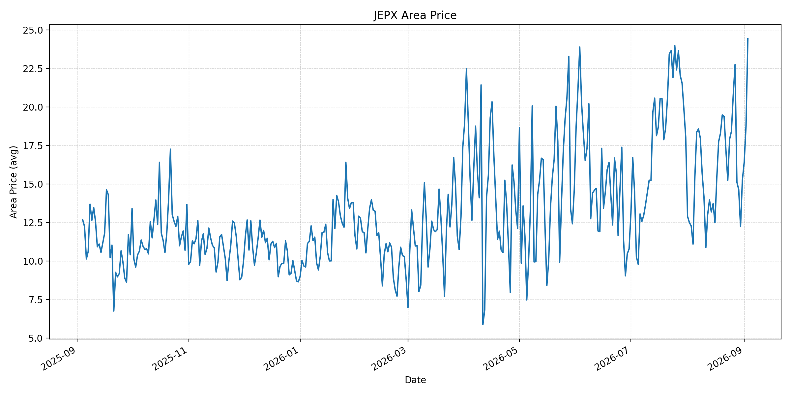
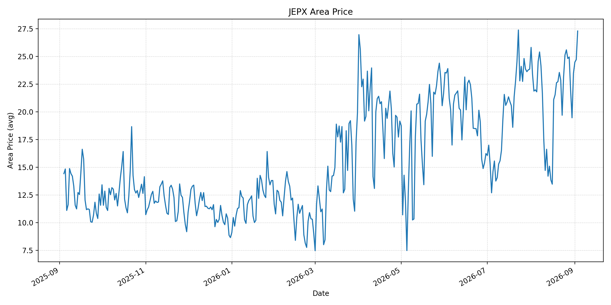
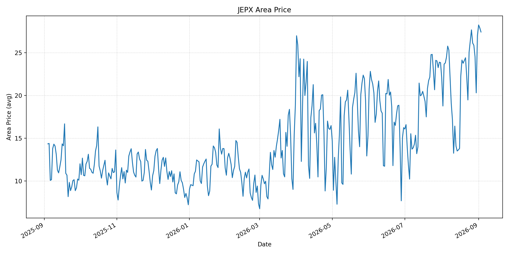
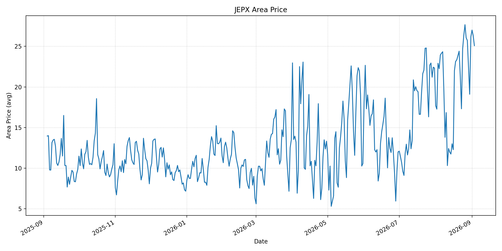
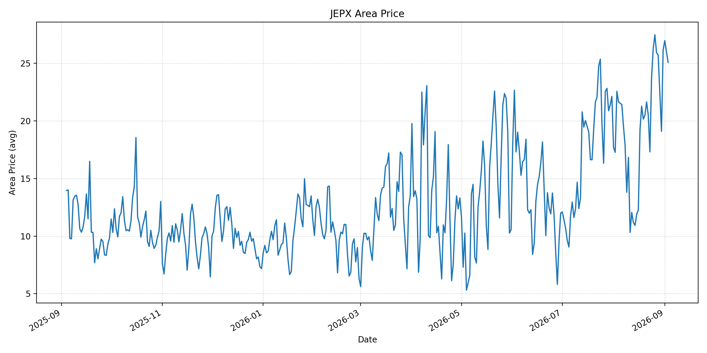
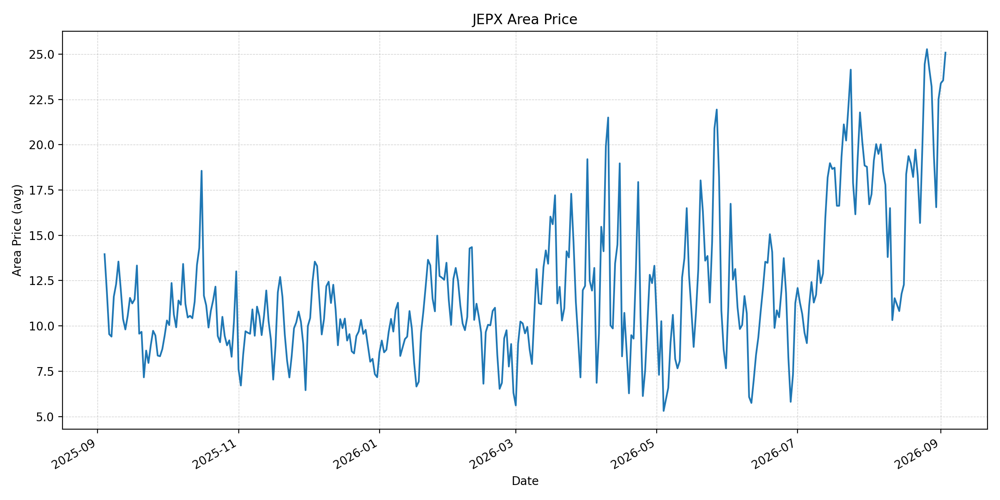
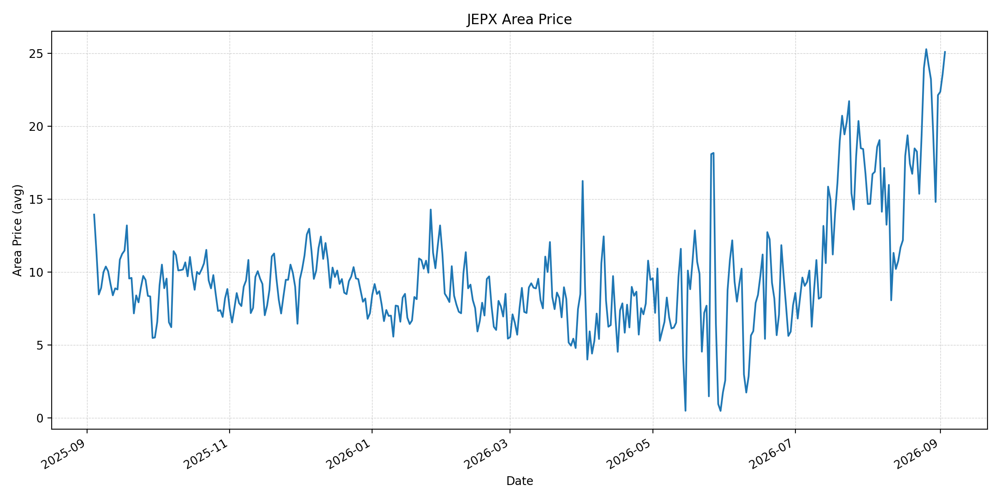
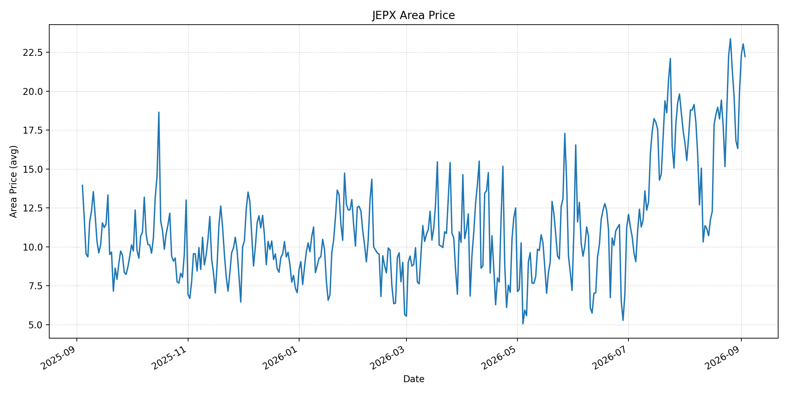
短期トレンド
JKMとJEPXシステムプライスの推移グラフ
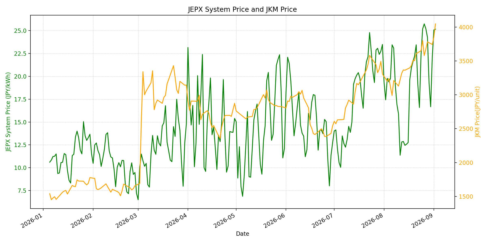
WTIの推移グラフ
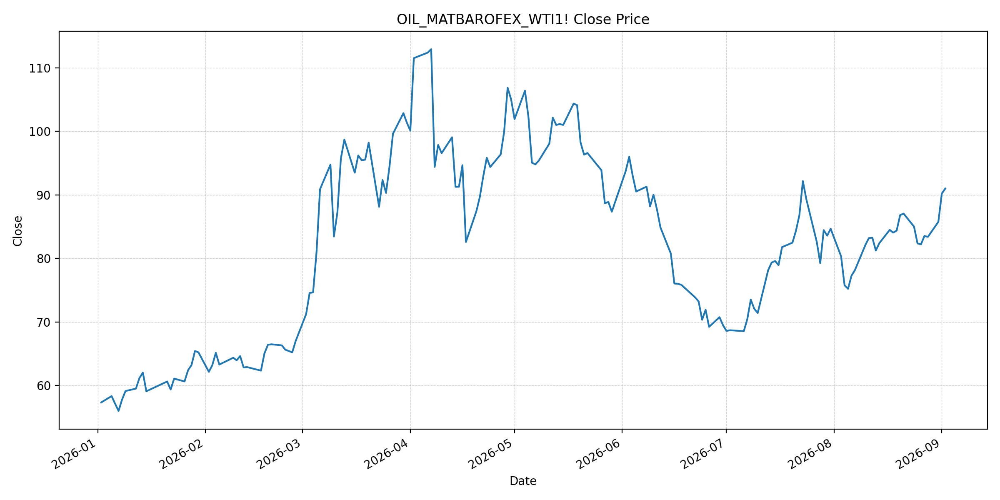
JEPXシステムプライス
最新値は 2026-09-03 分、先週終値は 2026-08-27、先月終値は 2026-08-31 時点の直近値です。
| エリア | 当日価格 | 前日価格 | 前日比（％） | 先週終値 | 先週比（％） | 先月終値 | 先月比（％） | 過去最高値 | 最高値比（％） |
|---|---|---|---|---|---|---|---|---|---|
| システム | 26.37 | 25.15 | 4.85 | 25.21 | 4.60 | 22.10 | 19.32 | 64.06 | -58.84 |
| 北海道 | 14.96 | 11.71 | 27.75 | 16.74 | -10.63 | 11.18 | 33.81 | 73.92 | -79.76 |
| 東北 | 24.43 | 18.77 | 30.15 | 22.76 | 7.34 | 15.25 | 60.20 | 84.92 | -71.23 |
| 東京 | 27.29 | 24.71 | 10.44 | 24.81 | 10.00 | 23.47 | 16.28 | 86.13 | -68.31 |
| 中部 | 27.41 | 27.89 | -1.72 | 26.12 | 4.94 | 27.01 | 1.48 | 52.06 | -47.35 |
| 北陸 | 25.08 | 26.32 | -4.71 | 26.05 | -3.72 | 26.18 | -4.20 | 46.48 | -46.05 |
| 関西 | 25.08 | 26.03 | -3.65 | 25.93 | -3.28 | 26.17 | -4.17 | 46.48 | -46.05 |
| 中国 | 25.08 | 23.55 | 6.50 | 24.18 | 3.72 | 22.51 | 11.42 | 46.48 | -46.05 |
| 四国 | 25.08 | 23.55 | 6.50 | 24.18 | 3.72 | 22.12 | 13.38 | 46.48 | -46.05 |
| 九州 | 22.23 | 23.04 | -3.52 | 21.39 | 3.93 | 20.06 | 10.82 | 40.54 | -45.17 |
LNG先物価格
最新値は 2026-09-02 の LNG(close) です。先週終値は 2026-08-26、先月終値は 2026-08-31 時点の直近値です。
| 当日価格 | 前日価格 | 前日比（％） | 先週終値 | 先週比（％） | 先月終値 | 先月比（％） | 過去最高値 | 最高値比（％） |
|---|---|---|---|---|---|---|---|---|
| 4047.00 | 3853.00 | 5.04 | 3580.00 | 13.04 | 3744.00 | 8.09 | 10319.00 | -60.78 |
石油先物価格
最新値は 2026-09-02 の OIL(close) です。先週終値は 2026-08-26、先月終値は 2026-08-31 時点の直近値です。
| 当日価格 | 前日価格 | 前日比（％） | 先週終値 | 先週比（％） | 先月終値 | 先月比（％） | 過去最高値 | 最高値比（％） |
|---|---|---|---|---|---|---|---|---|
| 91.01 | 90.22 | 0.88 | 82.23 | 10.68 | 85.76 | 6.12 | 123.70 | -26.43 |
ニュース
イラン情勢に関するニュース
- 9月2日未明、イランは米国の攻撃への報復として湾岸の米同盟国を攻撃しました。週末からの米・イランの応酬で地域の軍事的緊張が高まっています。参照: AP, 2026-09-02
- 米国は海峡での機雷敷設を阻止する目的で発射装置を攻撃したと説明しており、海峡沿岸の安全情勢は不安定です。参照: AP, 2026-09-02
ホルムズ海峡経由の石油・LNGに関するニュース
- 9月2日、サウジ海運会社Bahriは、同社船が海峡を通航中に受けた攻撃でフィリピン人船員2人が死亡したと発表しました。船舶の物理的安全リスクは継続しています。参照: AP, 2026-09-02
- 軍事行動再開で供給制約の懸念が続くなか、WTIは9月2日に91.01ドル、先週比10.68％となりました。参照: Reuters, 2026-09-02
ホルムズ海峡経由でない石油・LNGに関するニュース
- カタール・UAE積みLNGの3カーゴが、近週に海峡外で船舶間積替えを行い、インドと日本向けに輸送されました。LNGで通常は少ない物流対応です。参照: Reuters, 2026-09-02
- この積替えは個別カーゴの対応であり、海峡封鎖による供給制約を恒常的に代替する輸送能力を示すものではありません。参照: Reuters, 2026-09-02
日本国内のイラン戦争に関係するニュース
- 過去24時間で、JEPX制度または国内電力需給ルールを直接変更する主要な新規公表は確認できませんでした。
- 日本は中東迂回パイプライン支援と調達先多様化を含む供給強靭化策を進める方針です。参照: Reuters, 2026-08-26
インサイト
ニュース事項による日本の電力市場への影響（短期：数日〜1週間）
- JEPXシステムは 26.37 円/kWhで前日比 4.85%、先週比 4.60% です。東北 24.43 円/kWhは前日比 30.15%、東京 27.29 円/kWhは 10.44% 上昇しています。
- LNGは 4047.00 で前日比 5.04%、WTIは 91.01 ドルで先週比 10.68% です。船舶攻撃は保険・輸送コストと燃料調達のリスクプレミアムを押し上げる要因です。
- 日本向けを含むLNGの海峡外積替えは個別供給の補完になり得ますが、短期では安全事案、通航量、積替え実績を併せて確認する必要があります。
ニュース事項による日本の電力市場への影響（長期：1ヶ月〜半年）
- システム価格は先月比 19.32%、LNGは 8.09%、WTIは 6.12% です。燃料高が持続すれば、火力の限界費用を通じて卸電力価格を押し上げる可能性があります。
- 東北は先月比 60.20%、北海道 33.81%、東京 16.28% と上昇しています。燃料市況とエリア別の需給・連系制約を分けて監視する必要があります。
- 迂回輸送や船舶間積替えは柔軟性を高めますが、規模・継続性には制約があります。インフラ投資と調達多様化の実効性、海峡の安全な通航回復を中長期で検証します。